地政学
アグラはデリーと北インド平原、ラージャスターン、ブンデールカンドを結ぶ要衝で、ムガル帝国の都として権力の中心でした。現在も鉄道、道路、観光回廊を通じて、国家の歴史イメージと地域経済を動かす都市です。

🇮🇳 インド / 南アジア / World City Atlas
タージ・マハルの白い大理石、ヤムナー川、ムガル帝国の都の記憶、石工と皮革の労働、旧市街の市場、巡礼と観光、大気汚染と住宅の課題が重なる北インドの遺産都市です。
都市の骨格
アグラは一つの霊廟だけで成り立つ都市ではありません。ムガル帝国の都の空間、旧市街の商い、工芸と小工場、鉄道と道路、宗教行事、住宅地、環境規制が、世界遺産の周囲で複雑に結びついています。
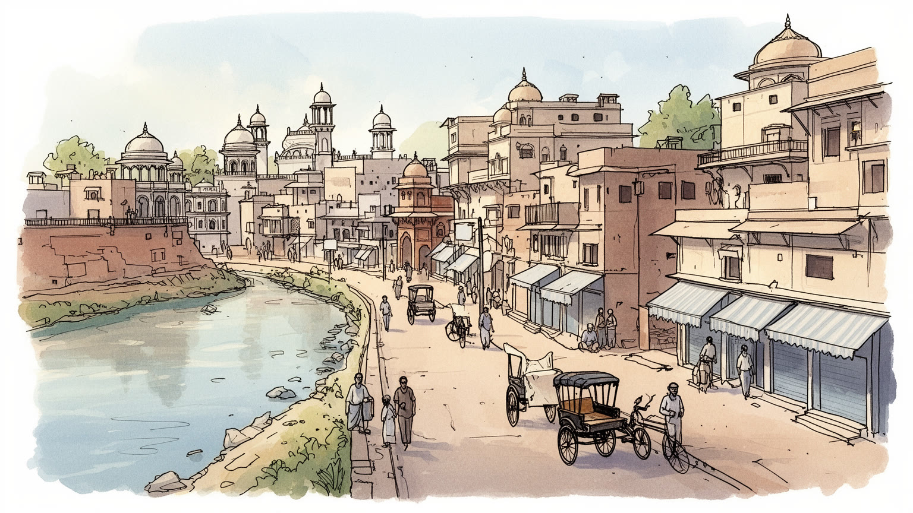
アグラはデリーと北インド平原、ラージャスターン、ブンデールカンドを結ぶ要衝で、ムガル帝国の都として権力の中心でした。現在も鉄道、道路、観光回廊を通じて、国家の歴史イメージと地域経済を動かす都市です。
観光、ホテル、交通、石工芸、皮革、鋳物、食品、小売、教育が雇用を作ります。世界遺産の華やかさの背後で、職人、案内人、運転手、清掃、露店、小工場の働き手が、季節需要、規制、観光の波に向き合っています。
ムガル建築、イスラームの墓廟文化、ヒンドゥー祭礼、ジャイナ教、シク教、旧市街の食と工芸、クリケットが重なります。宗教は名所の背景ではなく、礼拝、婚礼、季節行事、慈善、近隣の助け合いを通じて日常を作ります。
住民は混雑する道路、市場、学校、病院、工房、川沿いの住宅地を使い分け、旅行者はタージ・マハル、アグラ城塞、庭園、土産物店を巡ります。観光収入と物価、交通、大気汚染、住宅不足が同じ街路に現れる日々です。
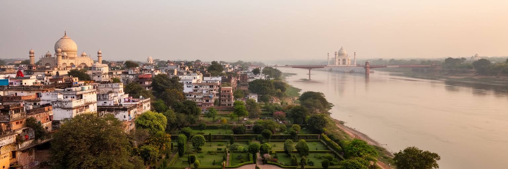
アグラを理解する出発点は、ヤムナー川の曲がりと北インド平原の交通です。川は水、庭園、農地、輸送、宗教的な清めの場を与え、ムガルの宮殿、墓廟、城塞を河岸に並べる軸になりました。タージ・マハルも単独の記念碑ではなく、川向こうの視線、月光庭園、城塞、旧市街、郊外の村を含む水辺の都市景観の中にあります。ですが現代のヤムナーは、上流の取水、下水、産業排水、砂州、乾季の流量低下によって、かつての豊かな水面を失う時が多いです。川の弱体化は景観だけでなく、地下水、緑地、暑熱、宗教行事、観光の印象にも影響します。河岸の保全区域は文化財を守る一方、住民や小商いの移転を迫ることもあります。アグラの地理を読むことは、帝国の庭園美と、現代都市の排水、土地利用、貧困、環境政策を同じ流域で見ることでもあります。橋や道路が増えても、川が痩せれば都市の記憶は薄くなります。水辺を再生するには、記念碑の眺望だけでなく、下水処理、河岸の公共空間、低所得地区の住環境、上流都市との連携を考えなければなりません。川沿いの畑や小集落は、都市の外れではなく、食料、労働、景観を支える縁でもあります。洪水と乾燥の双方に備える計画がなければ、河岸の美しさは不安定なものになります。川の記憶は街路にも残ります。ヤムナーは観光写真の背景ではなく、都市の過去と未来をつなぐ生きたインフラです。
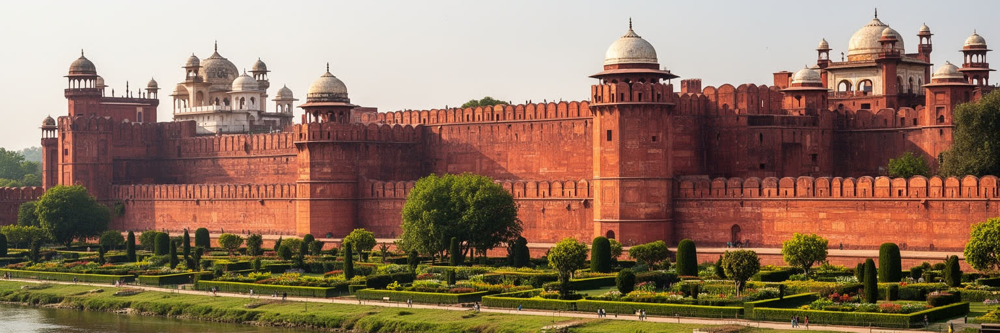
アグラの歴史的な重みは、タージ・マハルだけでなく、ムガル帝国の政治都市であった時間から生まれます。アクバル、ジャハーンギール、シャー・ジャハーンの時代、アグラは軍事、行政、宮廷文化、工房、交易、宗教論争が集まる首都として機能しました。赤砂岩のアグラ城塞は防御施設であると同時に、謁見、居住、儀礼、監禁の場でもあり、帝国権力の近さと不安を示しています。宮廷はペルシア語文化、インド各地の職人、中央アジアの記憶、ラージプートとの関係、イスラームとヒンドゥーの政治的調整を取り込みました。都市には庭園、隊商、バザール、宿泊施設、工房、宗教施設が広がり、権力の消費が雇用と技術を生みました。一方で帝国の栄光は、税、軍事遠征、階層、宗教政治、宮廷から排除された人々の歴史も含みます。現在のアグラでは、ムガルの遺産が国家観光、地域の誇り、宗教的緊張、学術研究、保存技術、地元紙やテレビの議論の対象として読み直されています。赤砂岩と大理石の美しさを眺めるだけでは、都市がどのように権力を集め、職人を組織し、交易路を支配したかは見えません。宮廷の移動やデリーへの重心移行は、アグラを過去の都にしたが、職人技と市場の記憶は都市に残りました。だから遺産は一時代の遺物ではなく、後世の経済と政治に使われ続ける資源でもあります。アグラを帝国都市として読む時、建築は過去の装飾ではなく、行政、労働、信仰、外交が固まった都市の記録になります。
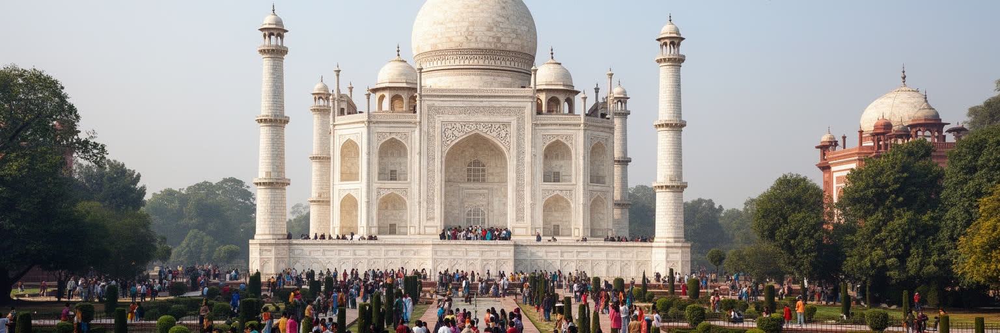
タージ・マハルはアグラの世界的な入口であり、同時に都市経済を大きく偏らせる存在でもあります。旅行者は白い大理石の霊廟、左右対称の庭園、川沿いの眺め、夜明けの光を求めて訪れ、ホテル、交通、案内、写真、土産物、飲食、警備、清掃の需要を生みます。観光収入は多くの家計を支えますが、来訪の集中は道路混雑、客引き、価格競争、短時間滞在、季節変動を招きます。記念碑を守るための交通規制や汚染対策は必要ですが、周辺の小商人や職人にとっては営業場所と移動手段の制限にもなります。タージを愛の記念碑として単純に消費すると、霊廟を作った職人、宮廷政治、ムムターズ・マハルの死、帝国の財政、現代の保全労働は見えにくくなります。アグラの観光を持続させるには、滞在を城塞、庭園、旧市街、工房、食文化へ広げ、収入が地域へ残る仕組みを作る必要があります。写真を撮って去る旅ではなく、都市の厚みを理解する旅が増えれば、混雑も少し分散します。ガイドの質、料金の透明性、歩きやすい導線、多言語情報、子ども連れや高齢者が安心できる公共空間も、観光都市の評価を左右します。訪問者の満足と住民の生活を分けずに設計することが重要です。タージ・マハルの保存は大理石だけの問題ではありません。空気の質、川の水、労働者の賃金、訪問者の行動、周辺住民の生活が一体でなければ、世界遺産の美しさは都市から浮いた舞台になってしまいます。
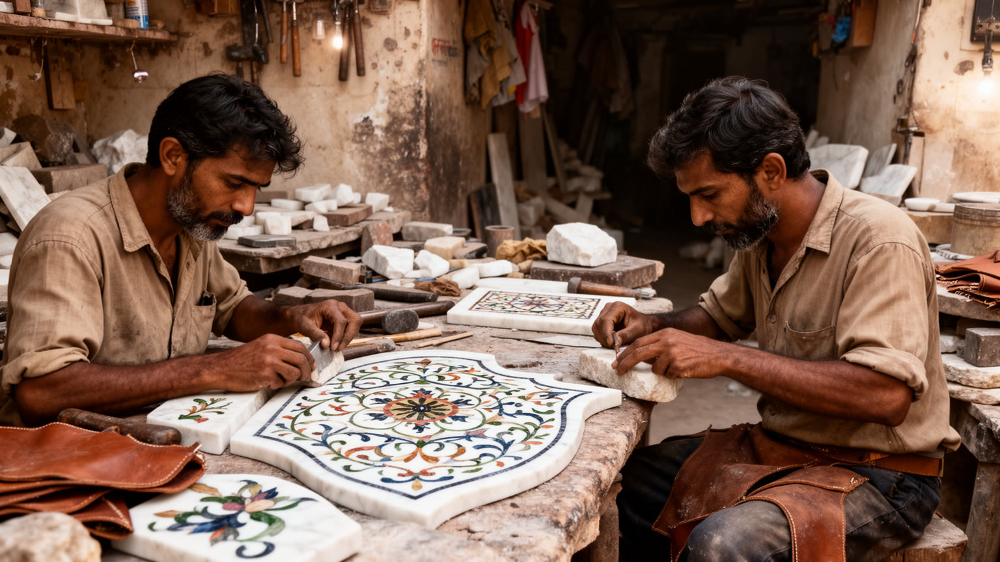
アグラの経済を観光だけで語ると、職人と小工場の厚みを見落とします。大理石の象嵌、石彫、木工、絨毯、革靴、鞄、鋳物、ガラス、食品加工、印刷、修理業は、家族経営の工房や小規模な作業場に支えられてきました。タージ・マハルに由来する石工芸は旅行者向けの商品として知られますが、そこには図案、研磨、接着、販売、梱包、輸送まで多くの仕事があります。皮革産業はアグラの雇用を支える一方、環境規制、排水、労働安全、国際市場の価格変動、ブランド化の難しさに直面します。小工場では非正規労働、低賃金、児童労働への警戒、健康被害、女性の在宅作業、仲介業者への依存が問題になりやすいです。文化財保護のために汚染産業を制限する政策は重要ですが、代替雇用や技術更新がなければ生活の不安を増やします。アグラの工芸を読むには、美しい土産物の背後にある労働時間、材料調達、信用、教育、医療、輸出の仕組みを見る必要があります。技能は都市の誇りであると同時に、暮らしを成立させる実務です。若い世代が職人仕事を続けられるかは、収入の安定、作業環境、デザイン教育、オンライン販売、観光客との公平な取引に左右されます。中間業者に価格決定を握られる構造を変え、作り手の名前や技術が評価される流通を育てることも欠かせません。遺産都市の未来は、記念碑を守るだけでなく、手を動かす人の生活を守れるかにかかっています。
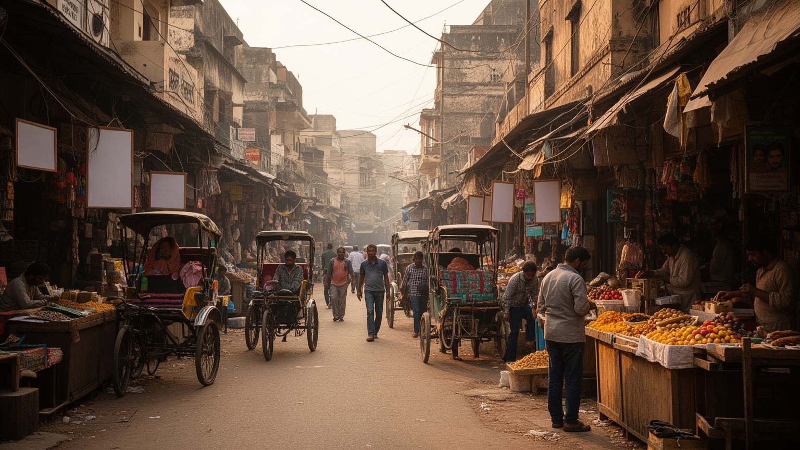
アグラの旧市街は、観光地の整った軸とは違う速度で動きます。キナーリー・バザール、ラージャ・キ・マンディ、ジャマ・マスジド、Sadar Bazaar周辺の路地には、香辛料、菓子、衣料、宝飾、婚礼用品、金物、文房具、携帯電話、宗教用品、屋台が密に並びます。狭い道路には歩行者、二輪車、リキシャ、荷車、牛、配達員が交差し、音と匂いと交渉が都市の日常を作ります。市場は旅行者にとって異国的な光景に見えやすいですが、住民にとっては学校用品、結婚準備、祭礼、修理、医療、親族訪問を支える実用の場所です。小さな店は信用取引や顔なじみの関係で成り立ち、家族労働と長い営業時間に依存します。再開発や道路拡幅、衛生規制、オンライン商取引、大型店の進出は、こうした商いを変えています。混雑は火災、救急、廃棄物、女性や高齢者の移動に課題を生みますが、市場を単に古く危険な空間として片付けると、都市の社会的な網を壊してしまいます。アグラの旧市街を読むには、路地の不便さと生活の密度を同時に見る必要があります。商品は市内だけでなく周辺農村や巡礼客、婚礼の親族ネットワークへ流れ、旧市街は広い地域の消費を受け止める結節点でもあります。買い物の距離が暮らしを決めます。改善すべきインフラは多いですが、店主の記憶、寺院やモスクへの動線、季節の祭り、婚礼経済、近隣の助け合いは、観光回廊では代替できない都市の財産です。
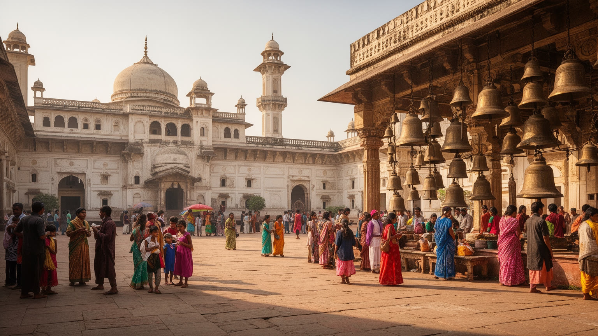
アグラの宗教生活は、世界遺産のイスラーム建築だけに収まりません。モスク、寺院、ジャイナ教寺院、グルドワーラー、小さな祠、墓地、聖者廟、家庭の祭壇が、住民の時間を細かく刻んでいます。金曜礼拝、ヒンドゥーの祭礼、ラマダン、婚礼の季節、巡礼、慈善、断食明けの食事は、商店の営業時間、交通、食材、親族の移動、近所の助け合いを変えます。ムガル遺産はイスラームの宮廷文化を強く示しますが、現代のアグラはヒンドゥー、ムスリム、ジャイナ、シク、キリスト教徒が混住する北インドの都市です。宗教はしばしば政治的な緊張の言葉で語られますが、日常では水を分ける、葬儀を手伝う、祭りの飾りを買う、近所の店で信用を受けるという形でも現れます。もちろん差別、噂、暴力の記憶、地区間の隔たりは無視できません。観光客が霊廟や城塞を見る時、その周囲で続く生活宗教を背景の音として消してしまいやすいです。アグラを読むには、壮大な建築と小さな祠、皇帝の墓と家庭の祈りを同じ都市の中に置く必要があります。宗教の多層性は文化の豊かさであると同時に、政治、教育、住宅、商いをめぐる繊細な調整でもあります。学校の休日、婚礼会場、音響、交通規制、寄付の流れまで、信仰は都市管理の実務にも関わります。共同の食事や施しも関係を結びます。祈りの時間に街の速度が変わることが、都市の呼吸を示しています。
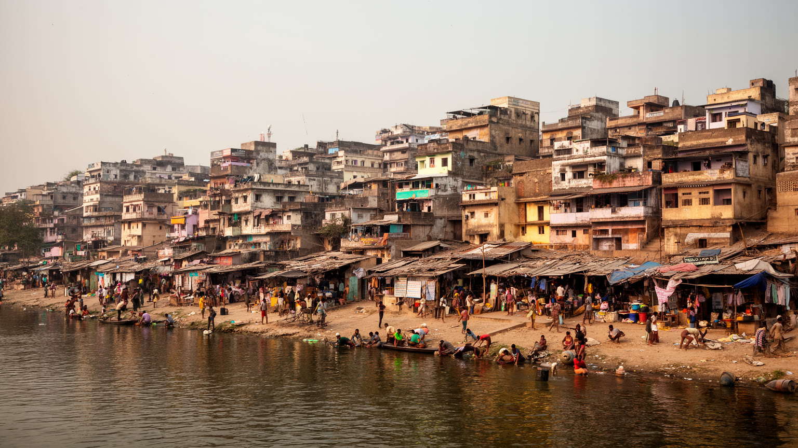
アグラの住まいは、旧市街の密集した住宅、川沿いの集落、郊外の新しい分譲地、工場周辺の労働者住宅、非公式な居住地が混在します。都市圏人口は増え、周辺農村からの移住者、観光と工業の働き手、Dr. Bhimrao Ambedkar University周辺の学生、小商人が仕事と教育を求めて流入します。家族は親族ネットワークを頼りに部屋を借り、二輪車や乗合交通で市場、工房、ホテル、学校へ通います。歴史地区の保全や観光地周辺の規制は、景観を守る一方、低所得世帯の居住地を不安定にすることがあります。水道、下水、廃棄物、排水、電力、学校、診療所へのアクセスは地区によって差が大きいです。女性の通学や就労は、街灯、公共交通、トイレ、安全な歩道にも左右されます。住宅問題は単に建物数の不足ではなく、雇用、カースト、宗教、所得、土地権利、交通と結びつきます。アグラを暮らしの都市として読むには、タージに近い眺望の価値だけでなく、働く人がどこに住み、どれだけの時間を通勤に使い、家賃と教育費をどう負担するかを見る必要があります。家族内の同居や間借りは家計を助けるが、過密、暑さ、衛生、学習空間の不足を生むことも多いです。公的住宅と賃貸の質を上げる政策がなければ、成長の費用は家庭へ押し込まれます。郊外開発が広がるほど、農地の転用、水需要、交通渋滞も増えます。住まいの安定は、観光都市の裏側の問題ではなく、ホテル、工房、市場、学校を毎日動かす基礎です。
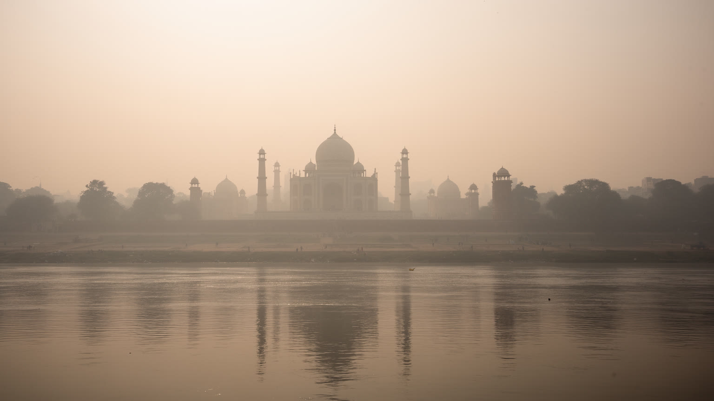
アグラの環境問題は、タージ・マハルの大理石を変色から守る話として知られやすいです。ですが大気汚染は、文化財だけでなく住民の肺、屋外労働者の健康、子どもの通学、観光の快適さ、都市の評判を同時に揺らす争点です。交通の排気、道路の粉じん、建設、発電、周辺産業、野焼き、冬の霧と逆転層が重なると、空気は重くなります。汚染対策区域では燃料転換、工場移転、車両規制、緑地保全が進められてきましたが、規制は小規模事業者の費用負担や雇用不安も生みます。夏の酷暑は水不足、熱中症、冷房費を増やし、雨季の強い雨は排水の弱い地区を浸水させます。気候と環境の負担は、エアコンのあるホテルや観光車両より、屋台、リキシャ運転手、工房、建設現場、密集住宅に重く現れます。アグラの空気をきれいにすることは、世界遺産のためだけの政策ではありません。公共交通、歩道、清掃、廃棄物管理、工場の技術更新、労働者支援、緑地、下水処理を組み合わせる都市政策です。測定値を公開し、学校や診療所が健康影響を把握し、低所得地区にも清潔な燃料と移動手段を届けることが必要になります。環境政策は監視だけでなく、代替の選択肢を用意して初めて続いています。大理石の白さを守る視線を、住民の健康と生活費へ広げる時、環境保全は観光の付属物ではなく都市の公平性になります。霧の朝に見えにくくなるのは記念碑だけではなく、働く人の未来でもあります。
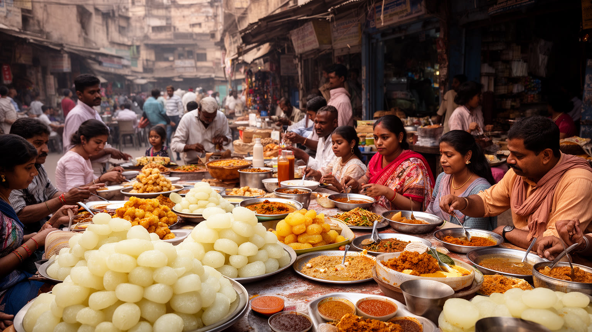
アグラの日常は、朝の茶、屋台の軽食、市場の買い物、学校への送迎、工房の作業音、観光客の流れが重なるところにあります。名物のペータ、ダルモート、チャート、パラタ、ムグライ料理、ラッシー、甘い菓子は、旅行者にも親しみやすい入口ですが、地元の食は家族、宗教、季節、仕事の時間と深く結びついています。旧市街の菓子店や食堂は、Taj Mahotsavや祭礼、婚礼の注文を受け、親族の訪問や商談の場にもなります。屋台は安く早い食事を提供し、学生、運転手、職人、店員、夜のSadar Bazaarを歩く家族の昼と夜を支えますが、衛生規制、場所代、警察との関係、交通整理、暑さに左右されやすいです。観光客向けの店が増えると、価格やメニューは変わり、地元客の居場所が狭くなることもあります。食文化を読むには、名物を味わうだけでなく、誰が作り、誰が配達し、誰が深夜まで片付け、どの水と燃料を使うのかを見る必要があります。家庭では女性の調理労働が大きく、外食の楽しさの背後にも見えにくい労働があります。アグラの食は、ムガルの宮廷料理の記憶と、北インドの庶民的な甘味、巡礼者の菜食、旧市街の商いを結びつけます。朝早く仕込みを始める店、学校帰りに菓子を買う子ども、夜の市場で軽食を囲む家族は、名所とは別の都市の親密さを見せます。味は都市の歴史を柔らかく伝えますが、その持続には清潔な水、安定した家賃、歩きやすい市場、働く人の健康が欠かせません。
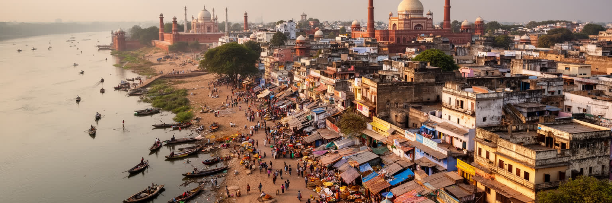
アグラは世界で最も有名な建築の一つを抱えるため、都市そのものが一枚の観光写真へ縮められやすいです。しかし実際のアグラは、ヤムナー川、ムガル帝国の政治記憶、旧市街の市場、石工と皮革の労働、宗教行事、住宅地、大気汚染、学校、病院、郊外開発、クリケットの広場、夜市が重なる複雑な都市です。タージ・マハルは強い入口ですが、その美しさを支える空気、水、労働、保存技術、交通、周辺住民の生活まで見なければ、都市の実像は見えません。観光は大きな収入源である一方、短時間滞在に偏れば、地元経済への広がりは限られます。文化財保護は不可欠ですが、規制が小工場や低所得世帯の生活を不安定にするなら、別の支援が必要になります。宗教と歴史は誇りを作りますが、政治的な緊張にも使われることがあります。アグラを読むことは、記念碑を否定することではありません。むしろ、記念碑の周囲にある日常を見つめることで、その価値を都市全体の未来へ広げることです。川を再生し、空気を改善し、職人の技能を守り、旧市街の市場を安全にし、住民が通勤と教育を続けられる条件を整える時、アグラは世界遺産の街から、過去と現在が共に生きる都市へ近づきます。旅行者が少し長く滞在し、工房や市場、川の状態にも目を向ければ、消費は理解へ変わります。行政、住民、職人、観光業が同じ都市像を共有できるかが次の焦点です。白い霊廟の影には、毎日働き、祈り、売り買いし、学ぶ人々の厚い時間があります。